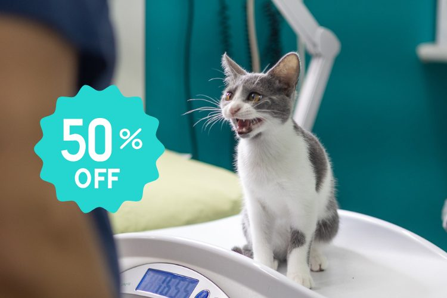

¡Hazte del Plan Amigo!
Salud, ahorro y tranquilidad asegurada. Todos nuestros clientes amigos son clientes preferenciales, como premio a su fidelidad y compromiso con el cuidado de su mascota y con la clínica.
Plan Amigo: cuidado preventivo para la salud de tu mascota
Los programas preventivos de salud para animales son esenciales para garantizar su bienestar y calidad de vida. Gracias a ellos, se puede aumentar en un 50% la detección precoz de problemas de salud, permitiendo actuar a tiempo y evitar complicaciones graves.
En Clínica Veterinaria Gavà ofrecemos el Plan Amigo, un programa preventivo diseñado específicamente para cuidar de tu mascota, con revisiones periódicas, análisis completos y descuentos en tratamientos y servicios. Porque tu compañero de vida se merece lo mejor, ¿verdad?
Ventajas exclusivas para clientes amigos
Descuentos y servicios
Todos los servicios que ofrecemos a nuestros clientes y sus fieles compañeros cuentan con importantes descuentos en nuestra clínica, desde vacunas esenciales hasta las cirugías más avanzadas.
Consultas gratuitas
A veces puede ser difícil saber si un problema de salud requiere atención veterinaria. Ven a nuestra clínica siempre que lo necesites: ¡las consultas son completamente gratuitas!
Petición de cita prioritaria
Haremos todo lo posible para darte la máxima prioridad, adaptándonos a nuestra disponibilidad y a la urgencia de tu caso.
Siempre a la vanguardia
Incorporamos siempre las novedades más avanzadas del mercado: tu mascota será atendida con equipos veterinarios de última generación, pioneros en nuestra ciudad.
Sistema de recordatorios
Te proporcionaremos un alta completa con recordatorios de vacunas, tratamientos antiparasitarios y revisiones, para que nunca se te escape ningún detalle.
Únete hoy mismo al Plan Amigo
Llámanos o pásate por la clínica y te lo explicamos sin compromiso.